mitten 테마 시즌
겨울 나들이 계획이나 여행 소개에 쓰는 테마다. jussam을 바탕으로 색과 장식만 바꿨다. 눈빛 하늘색 바탕 위로 눈이 내리고, 맨 위에는 목도리 줄무늬, 바닥에는 쌓인 눈 언덕이 깔린다. 제목은 동글동글한 글꼴(Jua)이고 분홍 · 하늘 · 민트를 포인트 색으로 쓴다. d 키를 누르면 눈 오는 밤(남색 바탕)으로 바뀐다. 장소 하나를 엽서와 승차권 모양으로 소개하는 place, 사진 여러 장을 벽에 붙인 듯 늘어놓는 photos 레이아웃이 더 있다. 나머지 레이아웃과 컴포넌트는 jussam과 같다.

**굵게** 부분은 분홍 → 하늘 그라디언트, 오른쪽 아래에는 눈사람이 흔들린다.미리보기
예제 덱(mitten-example.md)을 빌드해 찍은 화면이다. 그림을 누르면 원래 크기로 열린다. 사진 자리의 그림은 예제용 자리표시 그림이다.


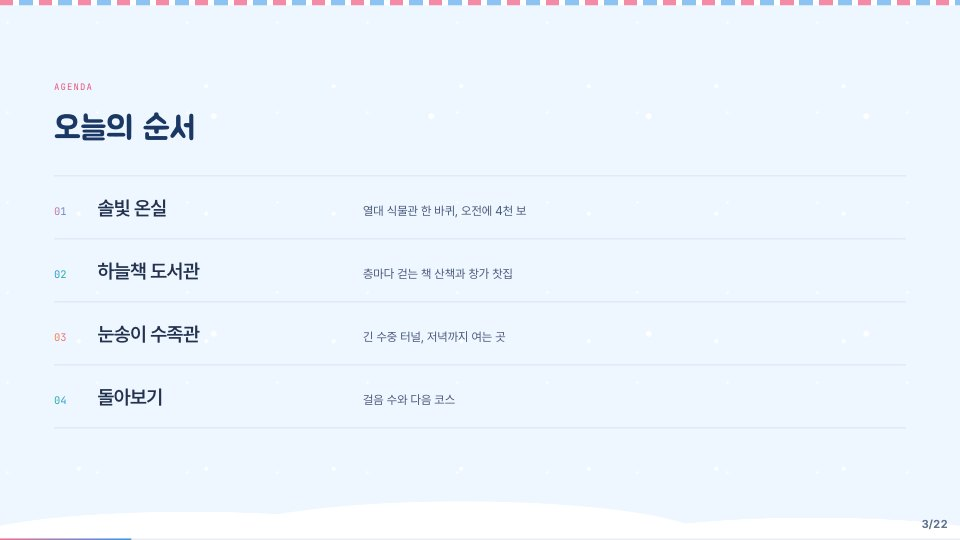

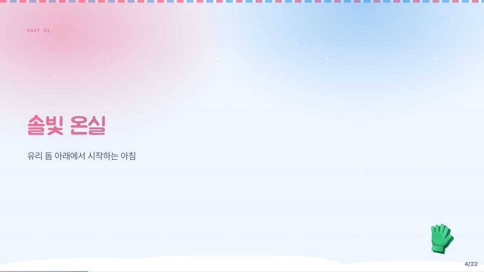


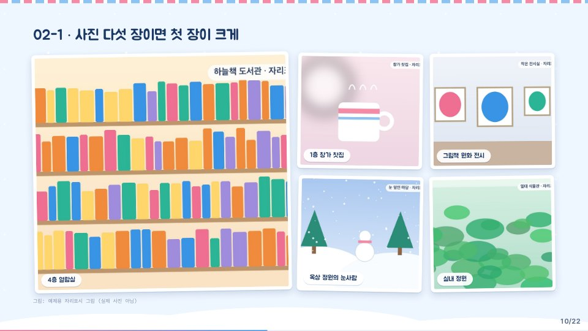

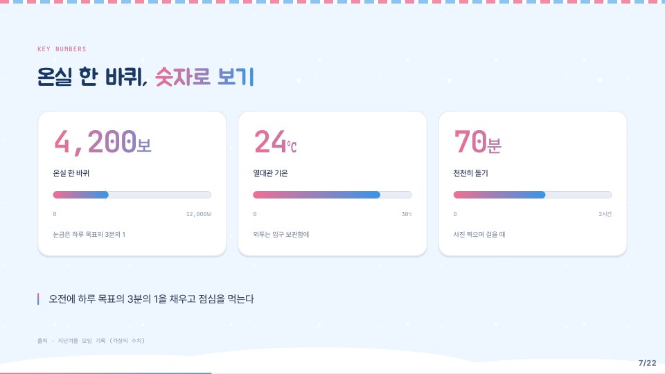

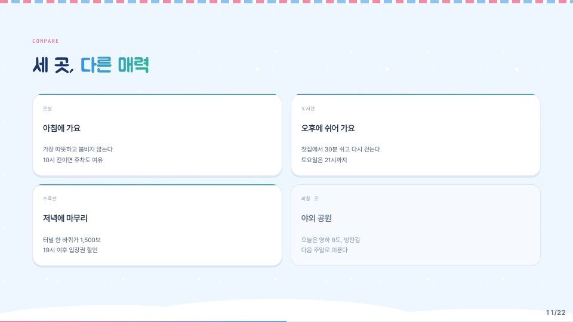


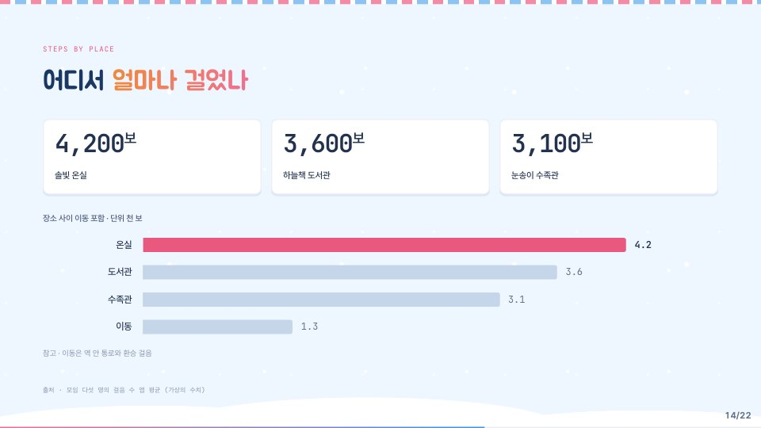


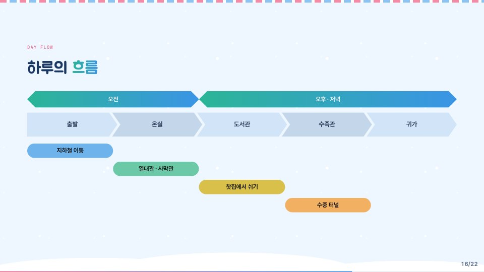

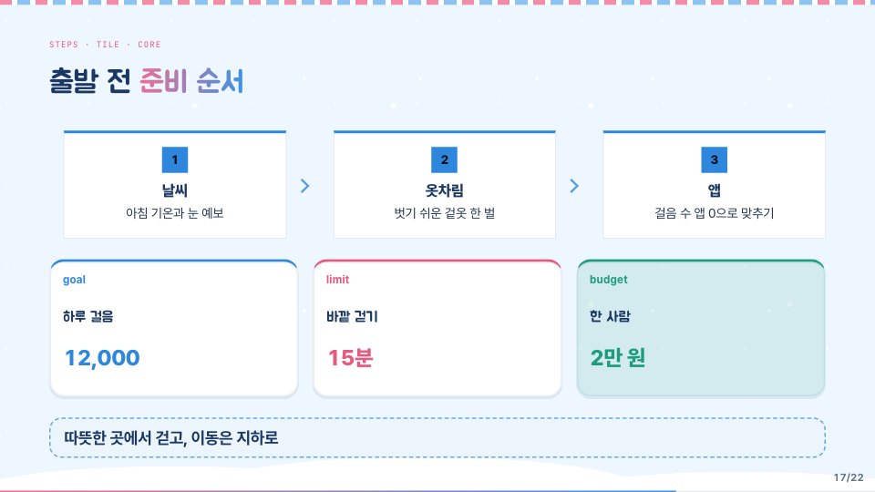

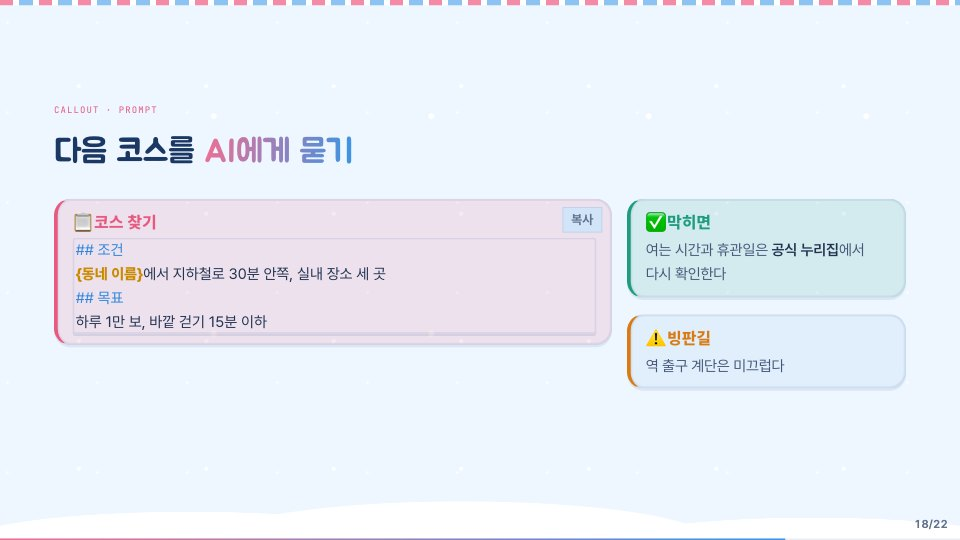


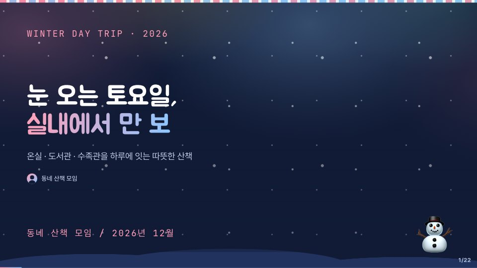

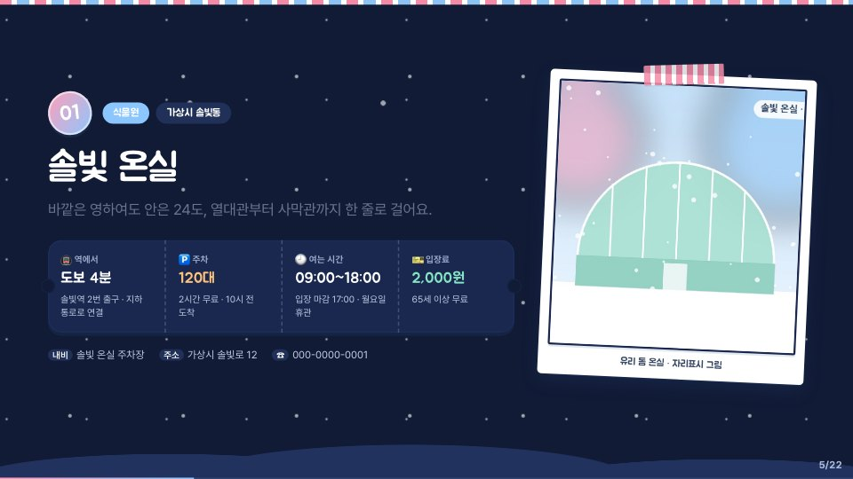
시작하기
저장소를 받은 뒤(git clone https://github.com/leekh4232/slidev-themes.git) 프런트매터에 테마 폴더 경로(theme: ./slidev-themes/mitten처럼 md 파일 기준)를 적는다. 첫 슬라이드의 프런트매터(헤드매터)에는 덱 전체 설정과 첫 슬라이드 설정을 함께 적는다. 밝은 눈빛 바탕이 이 테마의 기본 모습이므로 colorMode: light를 적어 두기를 권한다. 적지 않으면 처음 한 번은 어두운 테마로 열린다.
| 옵션 | 값 | 기본 |
|---|---|---|
colorMode | light면 눈 내린 낮(하늘색 바탕), dark면 눈 오는 밤(남색 바탕)으로 덱을 연다. 발표 중에는 d 키로 바꿀 수 있다 | 처음 한 번 어둡게, 그 뒤엔 마지막에 고른 테마 |
exportDark | true면 PDF·PNG 내보내기를 어두운 테마로, false면 밝은 테마로 | true (colorMode를 적었으면 그 테마) |
fontScale | 본문 배율(0.6~2). 덱을 이 배율로 열고, 0 키·배율 버튼을 누르면 이 값으로 돌아간다 | 마지막에 고른 배율 |
manuscript | true면 사이드바에 📄 원고 버튼(덱 원고 md를 깃헙 스타일 문서로 보기), false면 뺀다 | true |
sidebar | true면 발표 화면 왼쪽에 목차 사이드바(슬라이드 바깥), false면 슬라이드만 | true |
vivid | true면 화려한 모양(본문 바탕 색 번짐 · 진한 카드 그림자 · 꽉 찬 그라디언트 간지) | false |
---
theme: ./slidev-themes/mitten
title: 겨울 나들이 · 눈 오는 토요일 실내 코스 # " · " 앞은 사이드바 머리말 · 표지 머리말, 뒤는 단원 이름
author: 동네 산책 모임 # 생략 가능. 첫 표지 제목 아래 작성자
layout: cover
colorMode: light # 눈빛 하늘색 바탕으로 연다
eyebrow: winter day trip · 2026
footer: 동네 산책 모임 / 2026년 12월
---
# 눈 오는 토요일,<br>**실내에서 만 보**
온실 · 도서관 · 수족관을 하루에 잇는 따뜻한 산책슬라이드는 항상 16:9(1280×720 캔버스)이고, 사이드바 · 원고 보기 · 확대/축소 · 넘침 표시 · 쪽 번호 · 단축키(s · a · d · + · - · 0)는 jussam과 같다. 내리는 눈과 눈사람 · 장갑의 흔들림은 a 키(애니메이션 끔), 운영체제의 동작 줄이기 설정, 인쇄 · 내보내기에서 멈춘다.
jussam과 다른 점
구조와 컴포넌트는 jussam과 같고, styles/mitten-skin.css가 색 토큰과 장식만 덮어쓴다. 두 테마는 서로 독립이라 mitten 폴더만 있어도 된다.
| 부분 | jussam | mitten |
|---|---|---|
| 바탕 | 검정(밝은 테마는 흰색) | 눈빛 하늘색 #eef6ff(어두운 테마는 남색 #111b36). 내리는 눈 세 겹, 바닥에 눈 언덕 셋, 맨 위 7px 목도리 줄무늬(분홍 · 흰색 · 하늘) |
| 제목 글꼴 | Pretendard 굵게 | 동글동글한 Jua(Google Fonts). 본문은 Pretendard 그대로. 머리말(eyebrow) 없이 제목으로 시작하는 본문 쪽에는 제목 앞에 ❄가 붙는다 |
| 포인트 색 | 파랑 · 보라 · 분홍 | 분홍 #e8587f · 하늘 #2f86dd · 민트 #1f9c7d |
| 표지 · 간지 | 진한 메시 그라디언트 | 솜사탕처럼 옅게 번지는 분홍 · 하늘 · 민트 · 노랑. 표지 오른쪽 아래에 ⛄, 간지에 🧤가 흔들린다 |
| 카드 · 타일 | 12px 모서리, 그림자 | 22px 둥근 모서리, 아래로 살짝 눌린 그림자. 칩은 알약 모양 |
핵심 한 줄(Core) | 왼쪽 세로 막대 | 바느질 같은 점선 말풍선 |
| 표 | 얇은 가로줄 | 머리글은 둥근 하늘색 띠, 줄은 점선 |
| 그림 | 각진 모서리 | 둥근 모서리에 흰 테 |
| 타임라인 점 | 네모 점 | 눈덩이처럼 둥근 점 |
| 레이아웃 | cover · section · default · cards · magazine · infographic | 같은 여섯에 place(장소 개요) · photos(사진 모음)를 더했다 |
레이아웃
place와 photos 말고는 jussam과 프런트매터가 같다(jussam 레이아웃).
| 레이아웃 | 쓰임 | 프런트매터 |
|---|---|---|
cover | 표지 · 마무리 · Q&A. 첫 표지(1쪽)에는 덱 헤더의 author가 제목 아래 붙는다 | eyebrow, footer, mesh(soft / none), source |
section | 파트 표지 | part(1~4), eyebrow |
default | 본문. 적지 않으면 이것 | eyebrow, part, source |
cards | 제목 아래 <div> 칸들이 둥근 카드 격자가 된다 | cols(기본 3) |
magazine | 왼쪽 큰 제목 + 본문, 오른쪽 ::right:: 칸 | - |
infographic | 제목은 위, 나머지는 가운데 무대 | - |
place | 장소 하나의 개요. 왼쪽에 번호 · 딱지 · 제목 · 승차권 정보 띠, 오른쪽에 테이프로 붙인 사진 | no, kind, region, late, image, caption, facts, navi, addr, tel |
photos | 사진 3~6장을 벽에 붙인 사진처럼 늘어놓는다 | photos |
place — 장소 개요
엽서와 승차권을 겹친 모양이다. 슬롯(본문)에는 # 제목 한 줄과 한 줄 소개 문단을 쓴다. 제목은 46px 둥근 글꼴, 소개는 회색 18px가 된다. 정보 띠의 칸 사이는 점선이고 양옆에 반달 홈이 파여 있다. 사진은 오른쪽 400px 칸에 높이 400px로 잘려 들어가고, 살짝 기울어진 인화지 위에 줄무늬 테이프가 붙는다.
| 프런트매터 | 뜻 |
|---|---|
no | 번호. 두 자리로 채워(1 → 01) 둥근 그라디언트 배지에 넣는다 |
kind | 종류 딱지(하늘색 알약). 예: 식물원 |
region | 지역 딱지(옅은 알약) |
late | 노란 🌙 딱지. true면 "늦은 오후에도 좋아요", 글을 주면 그 글(토요일은 21시까지) |
image | 오른쪽 사진 경로(./img/…) |
caption | 사진 아래 손글씨풍 설명. 사진의 대체 글로도 쓰인다 |
facts | 승차권 칸 배열(3~4칸 권장). 각 칸: k(작은 라벨), v(큰 값, 한 줄), s(아래 작은 설명), tone(큰 값 색: ok 민트 · warn 귤색 · danger 빨강 · py 하늘 · ai 분홍, 없으면 제목 색) |
navi · addr · tel | 정보 띠 아래 한 줄. 각각 "내비" · "주소" · "☎" 라벨이 붙는다. 셋 다 없으면 줄이 빠진다 |
---
layout: place
no: 2
kind: 도서관
region: 가상시 하늘동
late: 토요일은 21시까지
image: ./img/mitten-library.jpg
caption: 4층 열람실 책장
navi: 하늘책 도서관
addr: 가상시 하늘로 34
facts:
- { k: "🚇 온실에서", v: "지하철 2정거장", s: "약 15분 · 환승 없음", tone: py }
- { k: "🕘 여는 시간", v: "09:00~21:00", s: "일요일은 18시까지" }
- { k: "☕ 찻집", v: "1층 창가", s: "따뜻한 유자차 4,500원", tone: ai }
---
# 하늘책 도서관
계단으로 1층부터 5층까지, 층마다 책장 한 줄씩 걸어요.tone: warn인 주차 칸은 귤색, tone: ok인 입장료 칸은 민트큰 값(v)은 줄바꿈 없이 한 줄로 그려진다. 네 칸이면 값은 열 글자 안팎으로 짧게 쓰고, 긴 설명은 s로 내린다.
photos — 사진 모음
사진을 흰 테 인화지처럼 벽에 붙이고, 장마다 조금씩 다르게 기울인다. 사진 설명은 각 장 왼쪽 아래의 알약 딱지에 들어간다. 슬롯에는 제목과 출처 줄을 쓴다. 사진 칸은 제목 아래 남은 높이를 모두 채우고, 사진은 칸에 맞춰 잘린다(object-fit: cover).
| 프런트매터 | 뜻 |
|---|---|
photos | 사진 배열. 각 항목: src(경로), cap(설명 딱지, 대체 글로도 쓰인다) |
| 장 수 | 배치 |
|---|---|
| 6 | 3열 × 2행 |
| 5 | 4열 × 2행, 첫 장이 2×2 칸을 차지해 크게 |
| 4 | 2열 × 2행 |
| 3 | 3열 한 줄 |
---
layout: photos
photos:
- { src: ./img/mitten-greenhouse.jpg, cap: 유리 돔 외관 }
- { src: ./img/mitten-leaves.jpg, cap: 열대 식물관 }
- { src: ./img/mitten-cafe.jpg, cap: 온실 안 찻집 }
- { src: ./img/mitten-yard.jpg, cap: 눈 덮인 앞마당 }
- { src: ./img/mitten-gallery.jpg, cap: 식물 세밀화 전시 }
- { src: ./img/mitten-library.jpg, cap: 씨앗 도서 코너 }
---
### 01-1 · 미리보기 사진
<p class="src">사진: 출처와 라이선스를 여기에</p>place의 image와 photos의 src는 프런트매터에 적는 경로라서 빌드(HTML 내보내기) 때 그림 파일이 함께 묶이지 않는다. Open with Slidev나 개발 서버로 열 때는 덱 폴더 기준 ./img/…로 보인다. 내보낸 HTML에서도 사진이 보이게 하려면 그림을 덱 폴더의 public/img/에 두고 같은 경로(./img/…)로 적는다. public/ 안의 파일은 빌드 결과에 그대로 복사된다. 그림을 img/에 둔 채 쓰려면 빌드한 뒤 덱의 img/ 폴더를 결과 폴더에 복사한다.
파트 색
part를 1~4로 주면 그 슬라이드의 강조색(제목 굵게, 머리말, 숫자)이 함께 바뀐다. 어두운 테마에서는 같은 순서의 옅은 색을 쓴다.
| part | 색 | 예(밝은 테마) |
|---|---|---|
| 1 | 분홍 → 하늘 | #ef6f93 → #3a94e6 |
| 2 | 하늘 → 민트 | #3a94e6 → #2bb596 |
| 3 | 귤색 → 분홍 | #f08a3c → #ef6f93 |
| 4 | 민트 → 하늘 | #2bb596 → #3a94e6 |
컴포넌트
컴포넌트 이름과 프롭은 jussam과 같다. 모양만 mitten 바탕(둥근 모서리 · 눌린 그림자 · 둥근 제목 글꼴)을 따른다. 프롭과 예제 코드는 jussam 매뉴얼의 각 항목에 있다. 프롭은 각 파일(mitten/components/*.vue) 머리 주석에도 있다.
| 컴포넌트 | 쓰임 |
|---|---|
Grid | 칸 나누기(cols · gap · align · title) |
Card | 둥근 카드(k · t · acc · sm · lg · dim) |
Stat | n을 주면 큰 숫자 카드와 미터, value를 주면 숫자 타일 |
Kicker · Note · Spacer | 맺음말, 작은 주석, 남는 세로 공간 |
Hero | 큰 숫자 한 개와 오른쪽 설명 |
Agenda · NumList · Item | 목차와 번호 목록 |
BeforeAfter · Side | 전후 비교 |
Timeline | events를 주면 날짜 축, 주지 않으면 <li> 타임라인 |
Gauge · Slope | 반원 게이지와 두 점 기울기 |
Funnel · Branch | 퍼널과 갈래 |
HBar · Meter · Bars | 가로 막대, 미터, 패널별 세로 막대 |
Mul · Formula | 곱셈 도식과 수식 한 줄 |
Figure | 그림 한 장을 칸에 맞춰 크게 |
Roadmap | 단계 꺾쇠 띠와 막대 로드맵 |
NodeMap | 좌표로 그리는 흐름도 |
Eras | 시대 축 위에 겹쳐 쌓이는 영역도 |
Callout · Prompt · Output | 콜아웃 · 프롬프트 · 출력 상자 |
Steps · Flow | 번호 목록과 가로 흐름도 |
Tile · Core · Chip | 타일, 핵심 한 줄(mitten은 점선 말풍선), 글 사이 작은 알약 라벨 |
YoutubeCard | 유튜브 썸네일 카드 |
클래스(.hl · .kicker · .card · .tight · .src …)와 슬라이드 프런트매터 class: tight · dense · compact도 jussam과 같다. 컴포넌트 안에 마크다운을 쓸 때의 빈 줄 규칙, 긴 데이터를 프런트매터에 두는 방법은 jussam의 주의할 점을 따른다.
전체 예제
mitten-example.md — 가상의 겨울 실내 나들이 코스(온실 · 도서관 · 수족관)를 소개하는 22장짜리 덱. 여덟 레이아웃과 주요 컴포넌트가 모두 들어 있고, 수치와 장소는 가상이며 사진은 자리표시 그림이다. 저장소 안에서 우클릭 → Open with Slidev.
### 굵게 그라디언트)